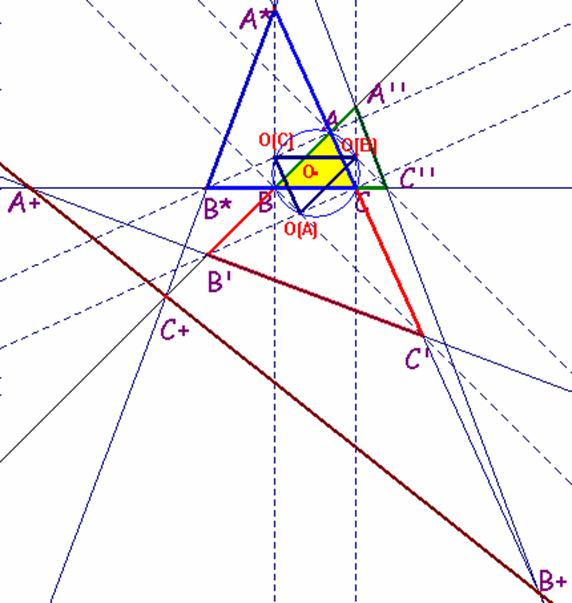

Problema 64
Sea ABC un triángulo.
Por los vértices B y C, por ejemplo, dibujamos las perpendiculares a los lados AB y AC hasta
que corten a las prolongaciones de los lados AC y AB(si es necesario), en los puntos C´y B´,
respectivamente.
Por los vértices A y C, trazamos las perpendiculares a los lados BA y BC hasta que corten a las
prolongaciones de los lados (si es necesario) BC y BA en los puntos C'' y A'' respectivamente.
Por los vértices B y A, trazamos las perpendiculares a los lados CB y CA hasta que corten a las
prolongaciones de los lados (si es necesario)CA y CB en los puntos A* y B* respectivamente.
De tal forma, que obtenemos los tres triángulos siguientes :
T(A)= AB´C´, T(B)= BA"C" y T(C)= CA*B* .
Sean los puntos:
A+ = recta(BC) intersección con recta(B' C'),
B+ =recta (AC) intersección con recta (A''C'')
y C+ =recta (AB) intersección con recta (A* B*).
Probar que :
a) Los triángulos T(A), T(B) y T(C) son semejantes al triángulo ABC, y O(A)O(B)O(C)(éste
formado por los ortocentros de los triángulos T (A), T(B) y T(C)), respectivamente, y estos dos
últimos son congruentes, en posición de Thales.
b) Probar si es cierto o no que los puntos A+, B+ y C+ son o no colineales.
Sol:
a) Veamos cómo los triángulos T(A), T(B) y T(C) son semejantes al triángulo ABC.
Fijémonos en uno de ellos, p.e. T(A).
Por la construcción de los puntos B' y C' tenemos que los puntos B,B',C,C' son concíclicos. Por tanto el ángulo en B' es el suplementario del suplementario de C, luego el ángulo en B' es el propio ángulo C. De igual modo el ángulo en C' es el ángulo B, siendo el ángulo en A común a los dos triángulos ABC y T(A). Dichos triángulos son semejantes, pues.
De igual modo serán semejantes los triángulos T(B) y T(C).
Por otro lado, tenemos que en el triángulo O(A)O(B)O(C) se verifica la siguiente propiedad:
El punto O(A) pertenece al arco capaz del segmento BC de medida el ángulo .
De la misma manera, se deduce que el punto O(B) pertenece al arco capaz del segmento AC de medida el ángulo y que el punto O(C) pertenece al arco capaz del segmento AB de medida el ángulo . En definitiva, los puntos O(A), O(B) y O(C) pertenecen a la circunferencia circunscrita al triángulo ABC. Para probar que los triángulos O(A)O(B)O(C) y ABC son congruentes, en posición de Thales sería suficiente probar ahora que los puntos A, O y O(A) están alineados. Y esto es cierto sin más que considerar que el ángulo A BO(A) es igual a 90º. Por tanto A y O(A) son diametralmente opuestos. Lo mismo ocurrirá con los pares B,O(B) y C,O(C)
|
 |
b) Para probar que, en efecto, los puntos A+,B+ y C+ son colineales haremos uso repetido del Teorema de Menelao.
Probaremos que es cierta la relación y así entonces por el Teorema de Menelao se tendrá que los puntos A+B+C+ son colineales.
Para deducir la validez de dicha expresión, tengamos en cuenta los siguientes hechos:
1.- Los puntos A''C''B+ pertenecen a las prolongaciones de los lados del triángulo ABC. Por tanto se verificará:
2.- Los puntos A* B*C+ pertenecen a las prolongaciones de los lados del triángulo ABC. Por tanto se verificará:
3.- Los puntos A+ B'C' pertenecen a las prolongaciones de los lados del triángulo ABC. Por tanto se verificará:
4.- Si multiplicamos las tres relaciones anteriores obtenemos:
o en este otro orden
5.- Ahora bien, como:
entonces tenemos que:
y, por tanto:
6.- Por otro lado, tenemos que
y, por tanto:
7.- Finalmente de las relaciones
obtenemos la relación deseada: que significa como sabemos que los puntos A+,B+ y C+ están alineados
F. Damián Aranda Ballesteros. Profesor del IES Blas Infante (Córdoba)